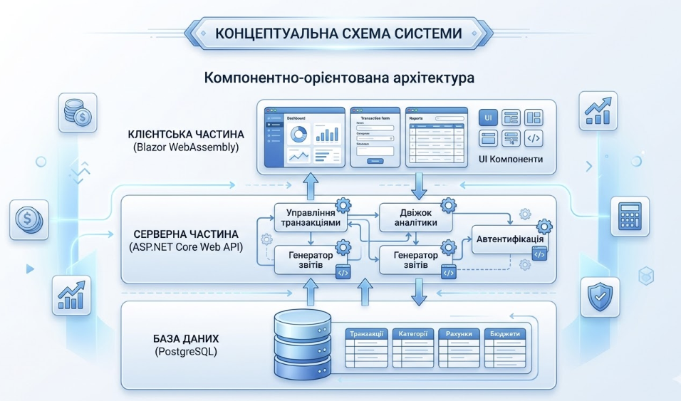

Короткий опис
Проєкт є вебзастосунком для автоматизації обліку транзакцій, управління фінансовими рахунками та забезпечення глибокого аналізу фінансового стану користувача. Система базується на стеку ASP.NET Core, Blazor та PostgreSQL.
Мета та завдання дослідження
Мета: Створення надійної, масштабованої інформаційної системи для управління персональними фінансами.
Основні завдання:
- Проєктування компонентно-орієнтованої архітектури системи.
- Розробка модуля обліку доходів, витрат та переказів.
- Реалізація гнучкої категоризації транзакцій.
- Створення модуля динамічної звітності та аналітики.
Очікувані результати
Готовий програмний продукт, що дозволяє користувачам ефективно контролювати фінанси, виявляти неочевидні витрати та планувати бюджет.
